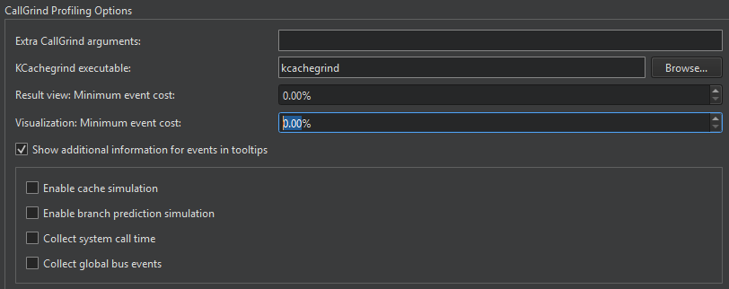

Valgrind Callgrind
Set Valgrind preferences either globally for all projects or separately for each project in the run settings of the project.
To set global preferences for Valgrind, select Preferences > Analyzer > Valgrind. Set Callgrind preferences in Callgrind Profiling Options.

In the KCachegrind executable field, enter the path to the KCachegrind executable to launch.
In Extra Callgrind arguments, specify additional arguments for launching the executable.
In the Result view: Minimum event cost and Visualization: Minimum event cost fields, limit the amount of results the profiler presents and visualizes to increase profiler performance.
To show additional information about events in tooltips, select Show additional information for events in tooltips.
To collect information about the system call times, select Collect system call time. To collect the number of global bus events of the event type Ge that are executed, select Collect global bus events.
Enabling Full Cache Simulation
By default, only instruction read accesses (Ir) are counted. To fully simulate the cache, select Enable cache simulation. This enables the following additional event counters:
- Cache misses on instruction reads (I1mr/I2mr)
- Data read accesses (Dr) and related cache misses (D1mr/D2mr)
- Data write accesses (Dw) and related cache misses (D1mw/D2mw)
Enabling Branch Prediction Simulation
To enable the following additional event counters, select Enable branch prediction simulation:
- Number of conditional branches executed and related predictor misses (Bc/Bcm)
- Executed indirect jumps and related misses of the jump address predictor (Bi/Bim)
See also Analyzing CPU Usage, Detect memory leaks with Memcheck, Detach views, Run Valgrind tools on external applications, Specify Valgrind settings for a project, and Valgrind Memcheck.